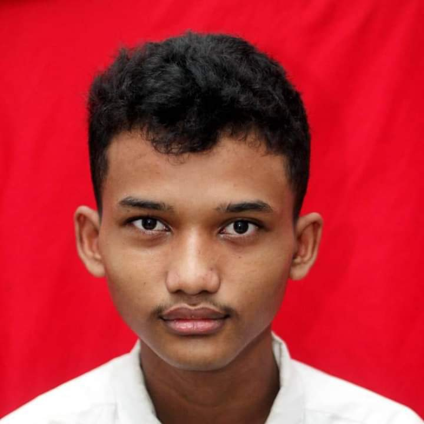
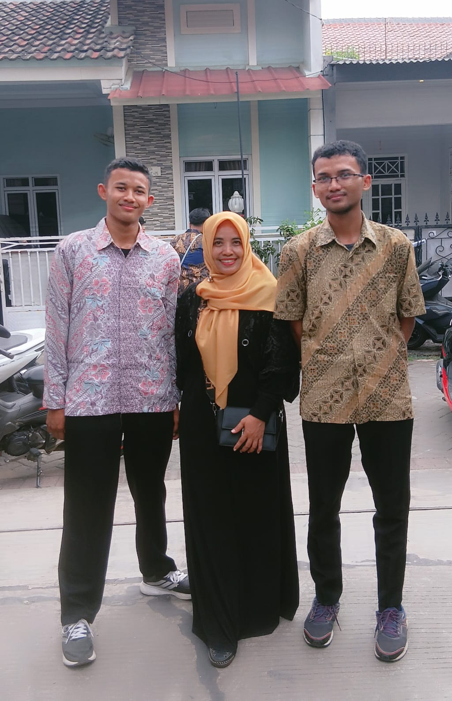
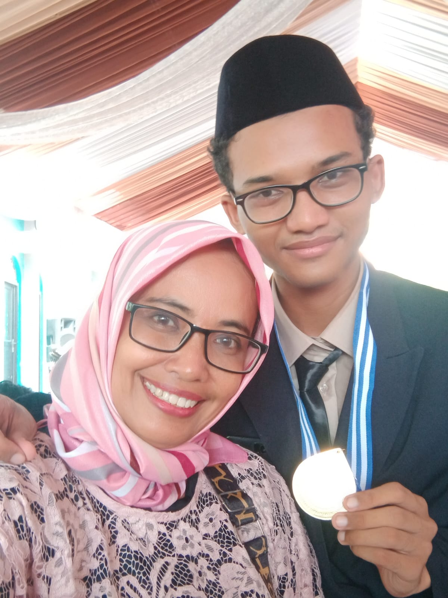
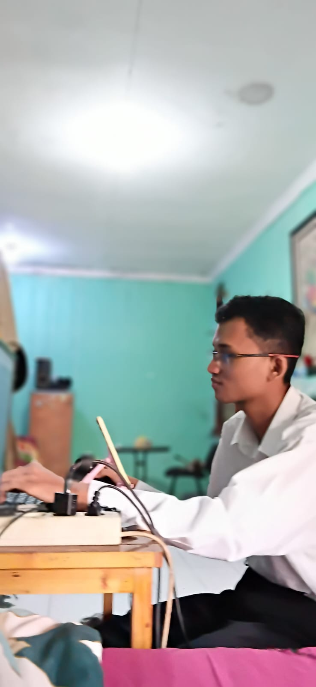
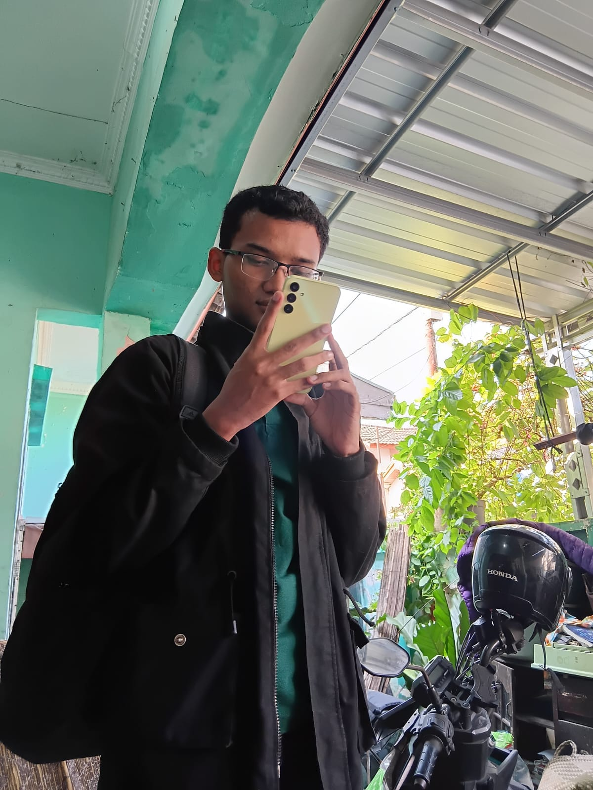

Profile Page: Raga Sambang Kumara

Raga Sambang Kumara
| NIM | 0110226059 |
|---|---|
| Kampus | STT Terpadu Nurul Fikri (STT-NF) |
| Program Studi | Teknik Informatika |
| Tempat, Tgl. Lahir | Jakarta, 31 Mei 2006 |
| Alamat | Provinsi Jawa Barat, Kecamatan Gunung Putri, Kabupaten Bogor, Kelurahan Bojong Kulur, Bumi Mutiara Blok JG 10/03. |
| Telepon | 0858-8001-5907 |
Saya Raga Sambang Kumara, mahasiswa STT Terpadu Nurul Fikri yang sedang mendalami dunia teknologi informasi. Saat ini saya belajar dasar pemrograman, arsitektur komputer, dan literasi digital sebagai bekal untuk berkarier di bidang teknologi.
Saya orang yang senang belajar hal baru dan terbiasa mengerjakan tugas secara bertahap sampai rapi. Ke depan, saya ingin mengembangkan kemampuan teknis dan kerja sama tim agar bisa membuat karya yang bermanfaat bagi banyak orang.
Video perkenalan
Koleksi foto



